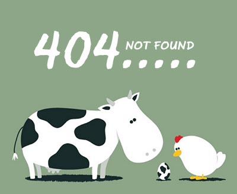

Tooltips也被称为屏幕提示，它是当鼠标悬停在一个图标、图片、超链接或其它元素上面的时候出现的一串提示信息。
你可以将Tooltip信息显示在元素的上面 我是上面的ToolTip
现在她在我的左面 我是左边的ToolTip
当然也可以在右面我是右边的ToolTip
和下面我是下面的!
或者你也可以自定义颜色为绿色我是绿巨人!
这一次是红色红太阳!
一转身或者蓝色蓝色天空!
当然你也可以为Tooltip制作一些很酷的动画效果，例如淡入淡出效果 淡入淡出!
滑动显示效果滑来了!
Tooltip不仅仅限于只能显示文字，你可以在tooltip中放置一些图片 